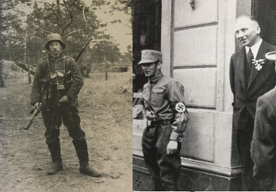

Huiswerk Jodenvervoling II
Opzoekvragen:
De NSDAP en Hitler wilden het Duitse res zuiver houden. Welke wetten moesten hier vanaf 1935 voor zorgen?
- Veel Joden werden aangemoedigd om te migreren. Naar welke plekken?
- Veel Joden bleven in Duitsland omdat ze helemaal waren geasimileerd. Wat wordt bedoelt met dit begrip?

- Op bovenstaande bron zie je een foto van een Duitsjoods gezin. Dit gezin past niet binnen het stereotype dat de Nazi's van de Joden hadden. Leg uit waarom niet.
- De jongen draagt een matrozenpak, dit was voor de Eerste Wereldoorlog mode in Duitsland omdat de marine belangrijker werd. Waarom werd de marine belangrijker? Kijk voor het antwoord ook nog naar de oorzaken van de Eerste Wereldoorlog.

- Hierboven zie je een foto van Duitse frontsoldaat Richard Stern, hij is van Joodse afkomst. Op de foto daarnaast zie je hem in 1935. Welke onderscheiding draagt hij daar?
- Hij wordt omringd door mannen van de SA. Wat is de SA?
- Hij laat zich op de rechter afbeelding fotograferen omdat hij demonstreert tegen een maatregel uit dat jaar, welke zal dat zijn?
- Zoek op hoe met de man is afgelopen
- In 1939 breekt de Tweede Wereldoorlog en veroverd Duitsland Polen uit, volgens Hitler ontstaat er dan in eens een groter Jodenprobleem. Waarom dan pas?
- In de landen die Hitler veroverd gebruikt hij einsaztsgruppen om de Joden daar te doden. Leg uit wat Einsatzgruppen zijn en hoe ze te werk gaan.
- Op 20 januari 1942 werd op de Wannsee Conferentie besloten om de Joden op een andere manier te gaan doden. Welke manier was dit?